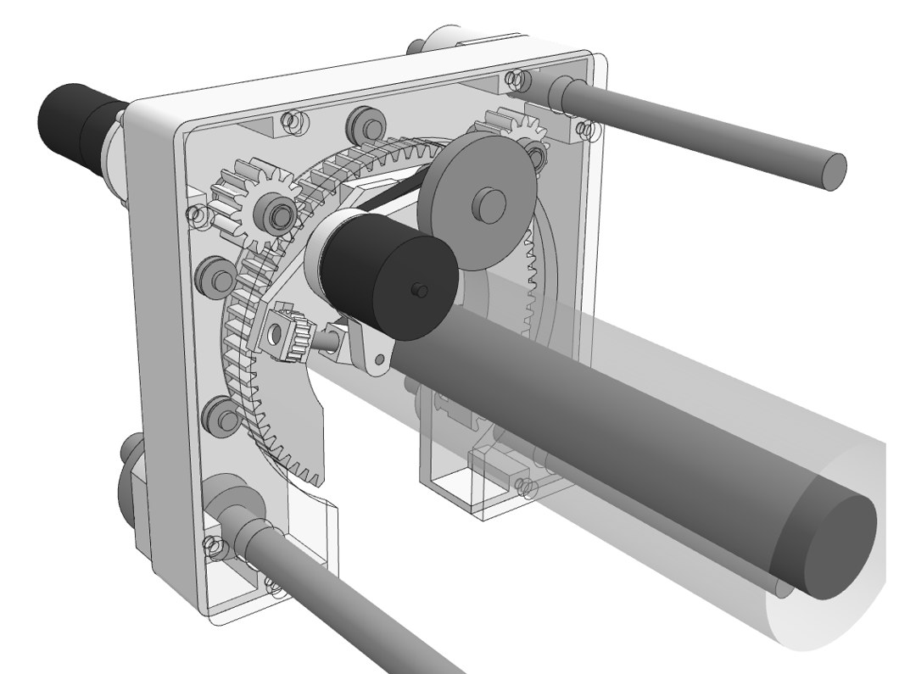

Automated Power Line Peeler (APLP)
A portable machine that strips insulation from installed power cable to a set thickness
Fall 2026 – Spring 2027
- Cable
- 19–51 mm
- Envelope
- 6×6×12 in
- Mass
- ≤ 20 lb
- Power
- < 500 W

Point at a partDrag to turn the model, scroll or pinch to zoom.
Contents
- 1The problemopen
- 2The machineopen
- 3Mechanical principlesopen
- 4One peeling cycleopen
- 5Controlopen
- 6Electronicsopen
- 7Firmwareopen
- 8Cutting analysisopen
- 9Manufacturingopen
- 10Bench testsopen
- 11Prototypeopen
- 12Legacy modelsopen
- 13Concepts consideredopen
- 14Precedents from natureopen
- 15Studies and schedulesopen
- 16Teamopen
- 17Documentsopen